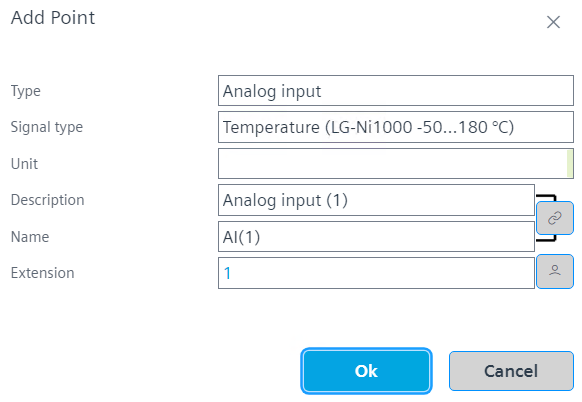
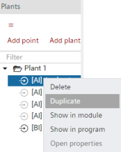

Creating I/O data points

You can also set the Signal type in the Property view. But make sure the signal type is supported by the module, otherwise the I/O are unassigned from the module.
For more information on BACnet object properties, see the BACnet object topics.
BACnet objects (Programming)
When you drag an I/O to a module that does not support the I/O type, the I/O is auto-assigned to the next possible module. You can change the preferred modules for each data type in Settings > Device defaults.
Device defaults
When calculating the required amount of power, total consumption is always estimated. After assigning the effective data points/signal type, the required power consumption may be reduced.
Power consumption of the TX-IO’s
Create I/O data points
- Go to Building > Building structure.
- Right-click a device and select Go to engineering.
- Open the I/O configuration task.
I/O configuration - In the Plants navigation view, select the plant you want to add the data points.
- The Add data point menu becomes active.
- In the Plants navigation view, click Add data point or right-click and select Add data point.
- The Add data point dialog box opens.
- Enter Type, Signal type, Unit, Description, Name and Object name of the I/O. Add Extension if required.

Note: The Object name field is only visible if the option Show property on adding objects is activated.
Plant automation tab - In the Property view, set the properties of the I/O.
- In order to duplicate created I/Os, right-click at least one I/O and select Duplicate.

- You have created I/Os and set the I/O properties.
Add a new data point from the library to an I/O module
- Click the Tabular view tab on the I/O configuration area.
- In the Plants navigation view, click
 to set the drag destination focus new.
to set the drag destination focus new. - The data points will be assigned to this plant
 .
.
Note: It is always possible to drag a data point directly to the position in the Plants navigation view, where its functionally belongs too (for example, valve). - Select the Library tab.
- Drop the data point to the I/O module. Free or compatible I/O slots are displayed in green.
- You added a new data point to the plant.